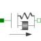
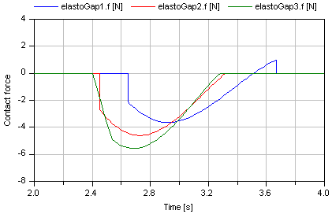

ElastoGap1D translational spring damper combination with gap |

|
Information
This information is part of the Modelica Standard Library maintained by the Modelica Association.
This component models a spring damper combination that can lift off. It can be connected between a sliding mass and the housing (model Fixed), to describe the contact of a sliding mass with the housing.
As long as s_rel > s_rel0, no force is exerted (s_rel = flange_b.s - flange_a.s). If s_rel ≤ s_rel0, the contact force is basically computed with a linear spring/damper characteristic. With parameter n≥1 (exponent of spring force), a nonlinear spring force can be modeled:
desiredContactForce = c*|s_rel - s_rel0|^n + d*der(s_rel)
Note, Hertzian contact is described by:
- Contact between two metallic spheres: n=1.5
- Contact between two metallic plates: n=1
The above force law leads to the following difficulties:
- If the damper force becomes larger as the spring force and with opposite sign, the contact force would be "pulling/sticking" which is unphysical, since during contact only pushing forces can occur.
- When contact occurs with a non-zero relative speed (which is the usual situation), the damping force has a non-zero value and therefore the contact force changes discontinuously at s_rel = s_rel0. Again, this is not physical because the force can only change continuously. (Note, this component is not an idealized model where a steep characteristic is approximated by a discontinuity, but it shall model the steep characteristic.)
In the literature there are several proposals to fix problem (2). Especially, often the following model is used (see, e.g., Lankarani, Nikravesh: Continuous Contact Force Models for Impact Analysis in Multibody Systems, Nonlinear Dynamics 5, pp. 193-207, 1994, pdf-download):
f = c*s_rel^n + (d*s_rel^n)*der(s_rel)
However, this and other models proposed in literature violate issue (1), i.e., unphysical pulling forces can occur (if d*der(s_rel) becomes large enough). Note, if the force law is of the form "f = f_c + f_d", then a necessary condition is that |f_d| ≤ |f_c|, otherwise (1) and (2) are violated. For this reason, the most simplest approach is used in the ElastoGap model to fix both problems by using this necessary condition in the force law directly. If s_rel0 = 0, the equations are:
if s_rel ≥ 0 then
f = 0; // contact force
else
f_c = -c*|s_rel|^n; // contact spring force (Hertzian contact force)
f_d2 = d*der(s_rel); // linear contact damper force
f_d = if f_d2 < f_c then f_c else
if f_d2 > -f_c then -f_c else f_d2; // bounded damper force
f = f_c + f_d; // contact force
end if;
Note, since |f_d| ≤ |f_c|, pulling forces cannot occur and the contact force is always continuous, especially around the start of the penetration at s_rel = s_rel0.
In the next figure, a typical simulation with the ElastoGap model is shown (Examples.ElastoGap) where the different effects are visualized:
- Curve 1 (elastoGap1.f) is the unmodified contact force, i.e., the linear spring/damper characteristic. A pulling/sticking force is present at the end of the contact.
- Curve 2 (elastoGap2.f) is the contact force, where the force is explicitly set to zero when pulling/sticking occurs. The contact force is discontinuous when contact starts.
- Curve 3 (elastoGap3.f) is the ElastoGap model of this library. No discontinuity and no pulling/sticking occurs.

Parameters (7)
| stateSelect |
Value: StateSelect.prefer Type: StateSelect Description: Priority to use s_rel and v_rel as states |
|---|---|
| s_nominal |
Value: 1e-4 Type: Distance (m) Description: Nominal value of s_rel (used for scaling) |
| useHeatPort |
Value: false Type: Boolean Description: =true, if heatPort is enabled |
| c |
Value: Type: TranslationalSpringConstant (N/m) Description: Spring constant |
| d |
Value: Type: TranslationalDampingConstant (N·s/m) Description: Damping constant |
| s_rel0 |
Value: 0 Type: Position (m) Description: Unstretched spring length |
| n |
Value: 1 Type: Real Description: Exponent of spring force ( f_c = -c*|s_rel-s_rel0|^n ) |
Connectors (3)
| flange_a |
Type: Flange_a Description: Left flange of compliant 1-dim. translational component |
|
|---|---|---|
| flange_b |
Type: Flange_b Description: Right flange of compliant 1-dim. translational component |
|
| heatPort |
Type: HeatPort_a Description: Optional port to which dissipated losses are transported in form of heat |
Used in Examples (3)
|
Modelica.Mechanics.Translational.Examples
Preload of a spool using ElastoGap models |
|
|
Modelica.Mechanics.Translational.Examples
Demonstrate usage of ElastoGap |
|
|
Modelica.Mechanics.Translational.Examples
Demonstrate the modeling of heat losses |
Used in Components (1)
|
Modelica.Magnetic.FluxTubes.Examples.Utilities
Mass with free travel between two stoppers |